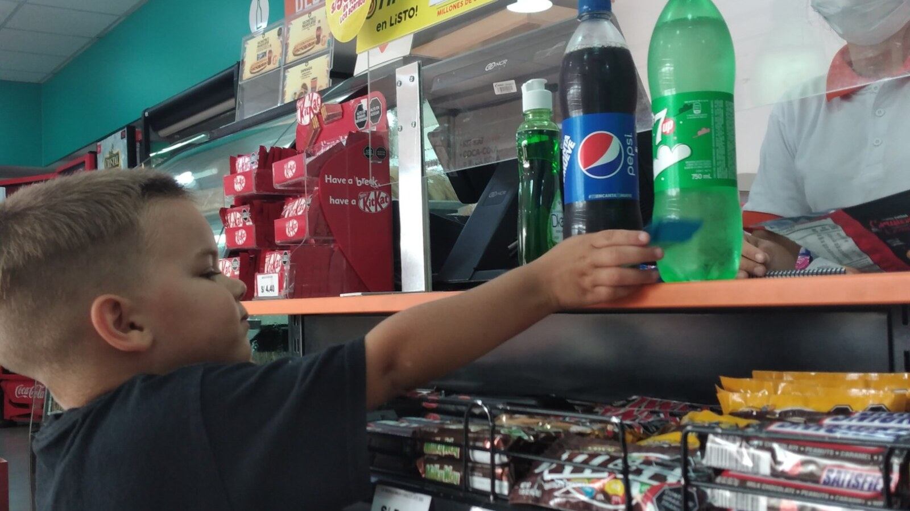

Preparing for Adult Life Before Special Education Ends
The best preparation starts with the adult life a person will actually have—not a generic list of milestones they are expected to reach.

When should a family begin preparing a disabled child for adult life?
Long before the last day of school—but not by turning childhood into one endless therapy session.
Good preparation is selective. It asks which skills, records, relationships, services, and safeguards will make this particular person’s adult life safer, easier, more connected, and more enjoyable. It also accepts that some adults will continue to need substantial help.
Preparation is not proving that support will no longer be needed. It is using today’s support to build tomorrow’s life.
Start with the destination, not a standard checklist
Federal IDEA rules describe transition as a results-oriented process based on the student’s strengths, preferences, and interests. The required postsecondary goals cover education or training, employment, and, when appropriate, independent living skills.
Those categories should open discussion, not narrow it. Adult life also includes communication, health, personal care, transportation, housing, relationships, recreation, sensory regulation, safety, money, consent, and support during emergencies.
Ask what the person’s likely adult week will require. If they will live with support, teach skills that make supported living work. If they use alternative communication, strengthen it across people and settings. If they cannot safely travel alone, practice participating in transportation with a reliable companion rather than treating solo travel as the only meaningful outcome.
Small ordinary skills can carry real weight
The photograph for this article was taken at a checkout in Lima, Peru. Sam was putting our drinks on the counter. To the people around us, it probably looked like nothing much. To me, it was awesome.
He had learned that when we reach the register, our items go on the counter. Today, at the grocery store, he unloads everything on his own.
That does not mean he can shop independently, manage money, evaluate prices, or stay safe without me. It means he has acquired a useful part of a real community routine. The skill reduces prompting, gives him a recognizable role, and lets him participate instead of merely being moved through the store.
This is how many meaningful abilities grow: one repeated step in the place where it is actually used. Families can celebrate the step without pretending it erases the surrounding support.
Use school goals in real environments
A worksheet about money is not the same as using a checkout. Naming transportation symbols is not the same as completing a familiar trip. Practicing a scripted request is not the same as communicating discomfort to an unfamiliar adult.
Transition services can include community experiences and daily living instruction. Families and schools can connect goals to grocery stores, clinics, buses, workplaces, kitchens, parks, and the person’s future home. The purpose is not exposure for its own sake. It is learning what support works when the environment is real.
Real settings also reveal constraints early: noise, waiting, bathrooms, traffic, fatigue, payment, staffing, recovery time, and whether a communication system is available when needed.
Prepare information as carefully as skills
No young adult should have to lose support because essential knowledge lived only in one parent’s head or one school employee’s experience.
Create a living support profile covering communication, medications, health history, allergies, food, personal care, mobility, sensory regulation, sleep, safety, routines, relationships, interests, distress signals, and successful responses. Include what the person can do independently, what requires a prompt, and what requires direct assistance.
Gather evaluations, school records, identification, benefits information, provider contacts, equipment details, and legal documents. Ask for a summary of performance before school eligibility ends where applicable. Update the materials when the person changes.
Make agency connections before the deadline
The U.S. Department of Education encourages coordination between school systems and vocational rehabilitation, including inviting likely adult-service partners into transition planning with the required consent. Employment services are important, but families with high support needs may also need developmental-disability services, health providers, benefits counseling, transportation, day supports, respite, legal planning, and housing resources.
Do not assume one referral equals enrollment. Ask who completes each application, which assessments expire, whether there is a waiting list, who funds transportation, and what happens between school exit and service start.
Where U.S. rules do not apply, use the same method with local institutions: identify the adult systems, make named contacts, gather requirements, and confirm what has actually been accepted.
What you can do this week
Choose one real-life routine
Pick a routine the person already encounters—checkout, laundry, lunch, a bus ride, medication, or entering a familiar building. Identify one useful step they can practice.
Create the first page of a support profile
Write how the person communicates yes, no, pain, help, finished, fear, and preference. Give the page to another trusted adult and ask what is unclear.
Audit the transition goals
For each goal, ask where it will matter in adult life, whether it reflects the person’s preferences, and what support will still be present.
Confirm one adult-system deadline
Call the relevant agency and write down the earliest application date, required records, expected timeline, and contact person.
Long-term questions to consider
- Which skills would materially improve safety, comfort, choice, or participation?
- Which goals consume great effort without improving the person’s likely life?
- Will communication work with unfamiliar caregivers and in emergencies?
- Who will maintain equipment, routines, records, and benefits?
- What adult services are confirmed, and what remains only a referral?
- How will the plan change if needs increase?
Casa de SAM’s position: prepare for supported adulthood honestly
Casa de SAM values learning and practical capability. We also reject the idea that every worthwhile goal must lead toward living alone.
For adults with profound support needs, preparation can mean doing more within a supported life, communicating more clearly within trusted relationships, participating more fully in ordinary places, and ensuring future caregivers inherit accurate knowledge. That is not a lesser adulthood. It is an honest and carefully built one.
Sources and further reading
- U.S. Department of Education: IDEA transition requirements in the IEP
- U.S. Department of Education: IDEA definition of transition services
- U.S. Department of Education: Transition Guide to Postsecondary Education and Employment
- U.S. Department of Education: Coordinating Transition Services and Postsecondary Access
About Casa de SAM
Casa de SAM is a developing vision for a lifelong residential community in Paraguay for adults with autism and other developmental disabilities who need substantial daily support. The project is being designed around safety, flexible daily rhythms, meaningful choice, relationships, and belonging that does not have to be earned through productivity or independence.
Casa de SAM is not yet an operating nonprofit or residential provider. We are currently researching, documenting the vision, and looking for people who may eventually help build it responsibly.
This article provides general educational information and describes Casa de SAM’s developing philosophy. Laws, eligibility rules, and services vary by country and jurisdiction. This is not individualized medical, therapeutic, educational, legal, or program-placement advice.